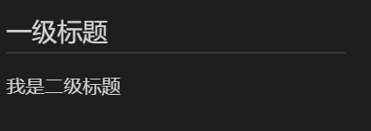
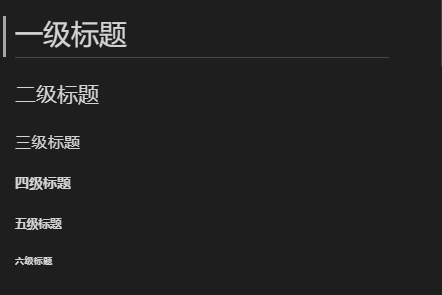
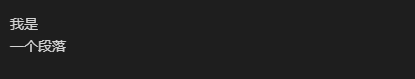

Markdown标题
Markdown 标题有俩种格式如下：
使用=和-标记一级和二级标题
=和-标记语法格式如下：
1 | 我是一级标题 |
效果如下图：
tip： =和-后可以不加空格
使用#号标记
使用 # 标记可表示1-6级标题
1 | # 一级标题 |
效果如下图：

tip： # 后必须加空格，一共只有六级标题，无七级标题。
Markdown段落
Markdown 段落没有特殊的格式，直接编写文字就好，段落的换行是使用两个以上 空格 加上回车
Markdown 段落如果不加 空格 只加 回车 则不会进行换行，只加 回车 不加 空格 也不会进行换行
1 | 我是 |
效果如下：

文本
样式文本
| 样式 | 语法 | 键盘快捷键 | 示例 | 输出 |
|---|---|---|---|---|
| 粗体 | ** ** 或 ____ | 命令/控制键 + b | 这是粗体文本 | 这是粗体文本 |
| 斜体 | * * 或 _ _ | 命令/控制键 + i | 这是斜体文本 | 这是斜体文本 |
| 删除线 | 这是错误文本 | |||
| 粗体和嵌入的斜体 | ** ** 和 _ _ | 此文本 非常 重要 | 此文本非常重要 | |
| 全部粗体和斜体 | *** *** | 所有这些文本都很重要 | 所有这些文本都是斜体 |
引用文本
使用 > 可以用来引用文本
1 | 文本 |
效果如下：
这是一个引用文本
这是一个引用文本
这是一个引用文本
tip： > 后必须加空格否则失效。
引用代码
- 使用 ` ` 可以用来行内引用代码
1
2文本
这是一个引用`代码`
效果如下:
文本
这是一个引用代码
- 使用 ``` ``` 引用代码块
- 使用
TAB制表符或者4个空格进行单行代码引用
分割线
使用三个以上的星号、减号、底线来建立一个分隔线，行内不能有其他东西。你也可以在星号或是减号中间插入空格。
下面每种写法都可以建立分隔线：
1 | *** |
效果如下
下划线
下划线可以通过 HTML 的 <u> 标签来实现：
1 | <u>下划线文本</u> |
效果如下图
下划线文本
脚注
脚注是对文本的补充说明。
Markdown 脚注的格式如下:
1 | 创建脚注格式类似这样 [^foot]。 |
效果如下：
创建脚注格式类似这样 ^foot。
tip: ^ 必不可少
列表
Markdown 支持有序列表、无序列表、任务列表。
无序列表
使用星号(*)、加号(+)或是减号(-)作为列表标记：
1 | * 第一项 |
效果如下
- 第一项
- 1.1
- 1.1.1
- 1.1.1.1
- 1.1.1
- 1.1
- 第二项
- 第三项
- 第一项
- 第二项
- 第三项
- 第一项
- 第二项
- 第三项
有序列表
使用数字并加上 . 号来表示，如：
1 | 1. 第一项 |
效果如下：
- 第一项
- 1.1
- 1.2
- 1.1.1
- 1.1.2
- 第二项
- 第三项
tip: 列表序号只会 从上到下 按照顺序排列，不会因为下面数字小而排列到上面
1 | 200. 第一项 |
效果如下：
- 第一项
- 1.1
- 1.2
- 1.1.1
- 1.1.2
- 第二项
- 第三项
任务列表
要创建任务列表，在列表项目前面加一个常规空格字符，后接 [ ]。 要将任务标记为已完成，请使用 [x]。
1 | - [x] 完成更改 |
效果如下：
- 完成更改
- 推送提交到 GitHub
- 打开拉取请求
链接
章节链接
使用方法：
1 | require "标题名" |
例如：aa
[TOC]
“任务列表”
相对链接
- 常规链接使用方法如下：
1
2
3
4
5
6
7[链接名称](链接地址)
或者
<链接地址>
例如：这是一个链接 [Markdown教程](https://coollittle.github.io/blog/)
效果如下： 这是一个链接 Markdown教程
- 变量名链接使用如下：
1 | 使用变量名进行链接 |
效果如下： Markdown教程
参考
菜鸟教程：https://www.runoob.com/markdown/md-tutorial.html
GitHub 帮助：https://help.github.com/cn/github/writing-on-github/basic-writing-and-formatting-syntax